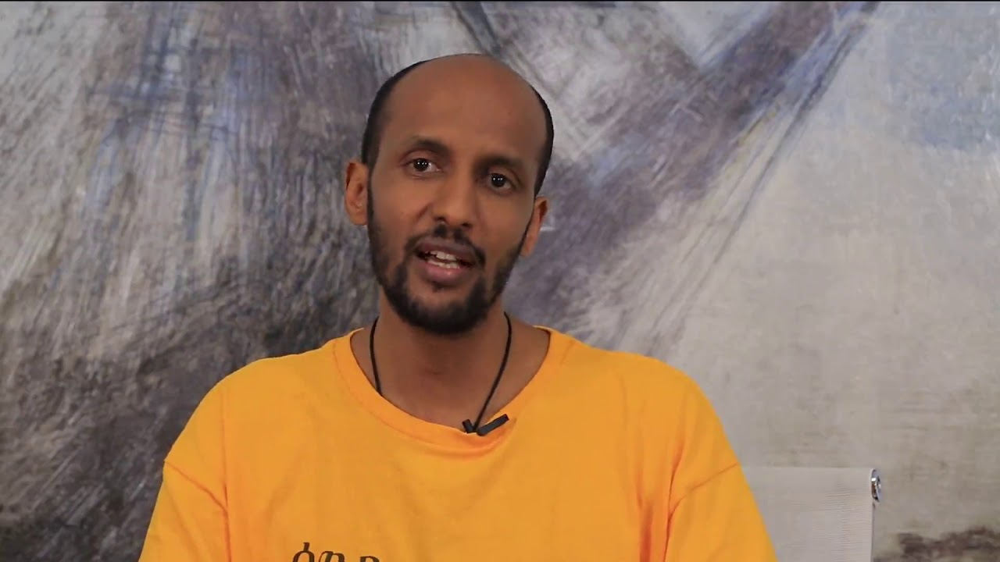

What and How we do?
Mekedonia is non-governmental, non-profit and independent organization, which was founded in January 2010. by Biniam Belete. it focuses on helping the lives of the elderly and those with mental disabilities, by providing all basic services (food, clothes, shelter, hygiene facilities, medical, educational and others) to the residents in the center. At the start mekedonia was found in Kotebe(at Biniam's family house) and was start by picking 10 peoples from street and give them food and shelter.
Based on the information the community gives to mekedonians(the volunture), the association take the residents from their living environment. As it is non-governmental organization it has not permanent fund source. all the services given to the resident are provided by the help of the community. now Mekedonia is building
our branches
| Name | Location | Phone number |
|---|---|---|
| Addis Ababa | Ayat Condominiums | 09 40 40 40 40 |
| Harar01 | Doker maryam | 09 40 40 40 40 |
| Harar02 | Abrha bata | 09 39 39 39 39 |
| DireDawa01 | Dire dawa | 011 645 2561 |
| ailuababur | Gorie | 09 27 19 50 28 |
| Adama | Oromia | 09 21 73 30 28 |
| Bekie | Oromia | 09 39 39 39 39 |
| Dessie_no.1 | dessie | 09 40 40 40 40 |
About it's founder
 Mekedonia is found by Biniam Belete(Doctor). He was born in Kotebe,Addis Ababa. He attend his primary and secondary school education in kotebe. his families live in America. He has gotten his first degree in school of Law at Addis Ababa university. he went to america after working for 3 years in his field. He got his Masters degree there and come back to ethiopia after 7 years of departure. as soon as he came to Ethiopia he started to take care of peoples by taking them to his house. this was the start of Mekedonya Now his start has become huge Association, where many elders and disabled peoples can get help. For his work Bahir Dar university gave him a doctoral degree.
our Vision
Mekedonia Humanitarian Association envisions Ethiopia where all the elderly people and those with disabilities have access and equal opportunities to basics in life.
our Mission
Mekedonia Humanitarian Association(MHA) is dedicated to provide housing, clothing, food, counseling, information and other necessities to elderly and people with disabilities. In pursuit of its mission, MHA focuses on the most vulnerable and disadvantaged elder people and those with disabilities to meet their priority social agendas and supports them by using varied approached and strategies.